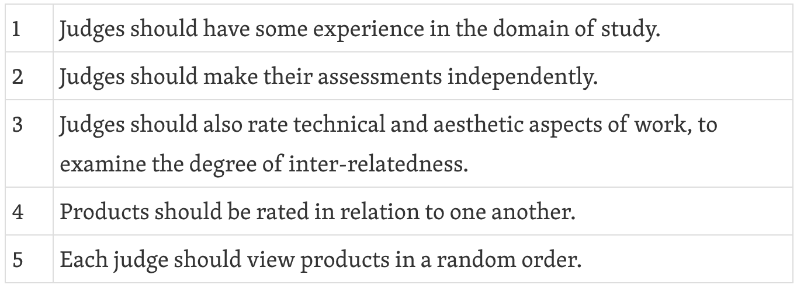
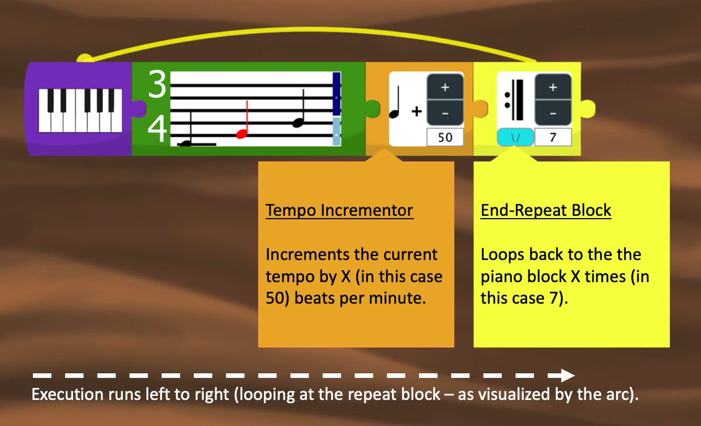
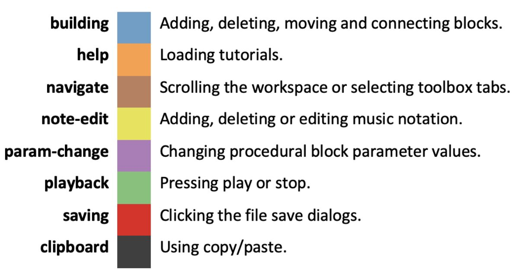
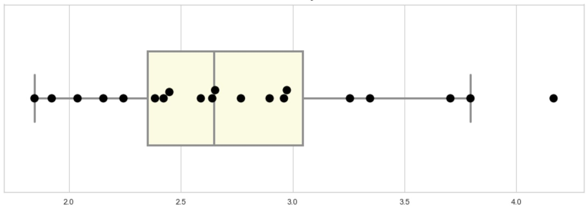
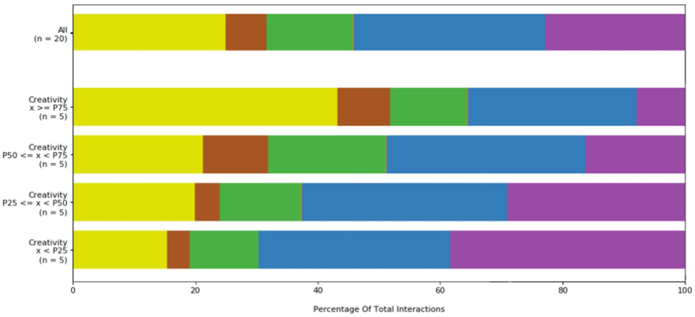
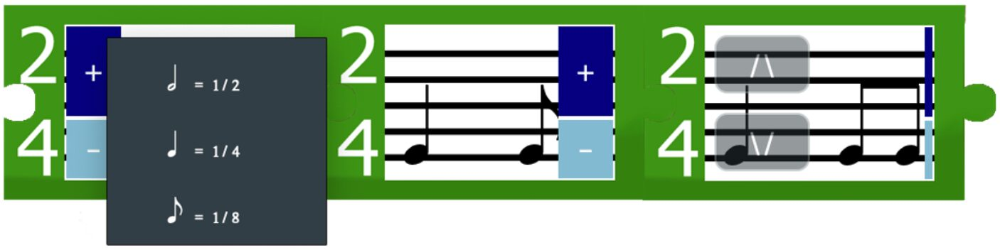
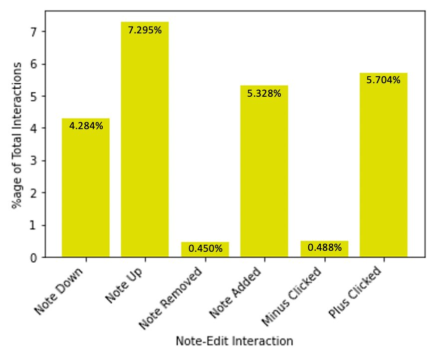
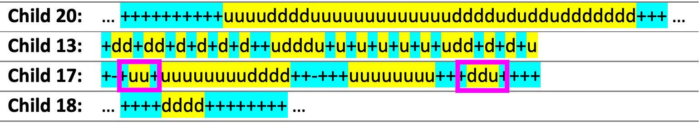
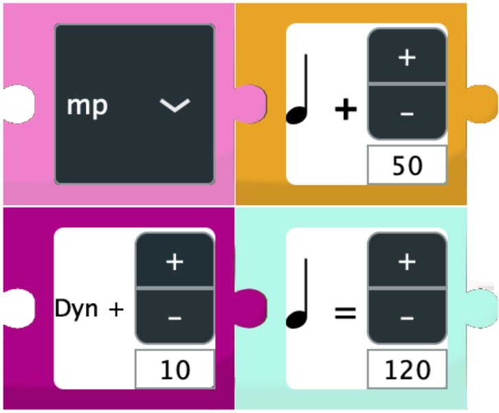
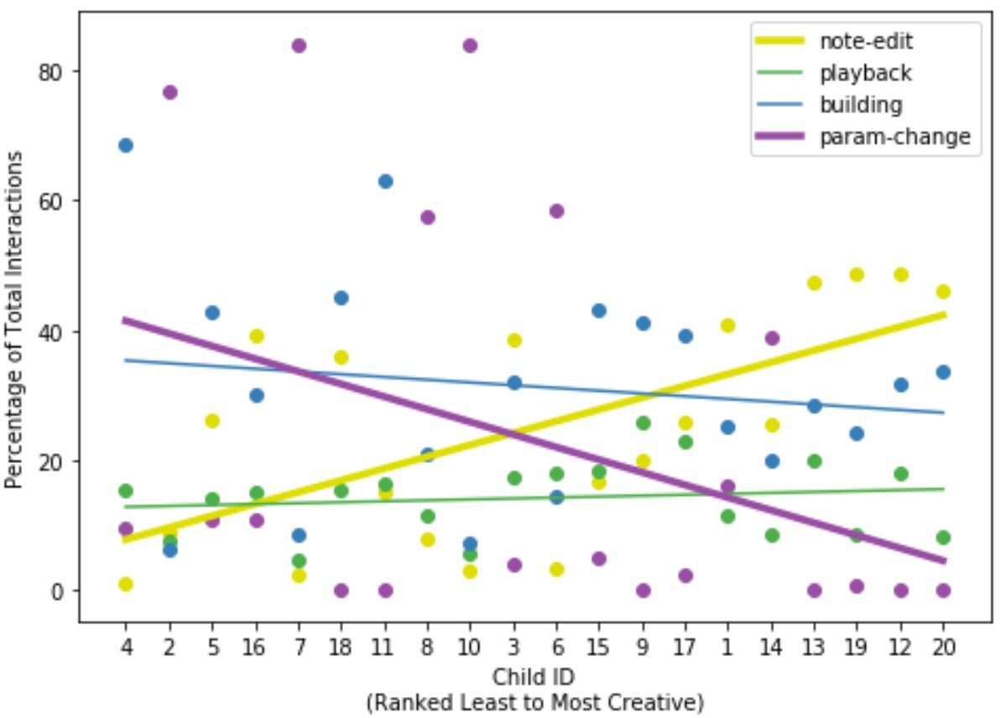

Creativity in Children\'s Digital Music Composition
Abstract
Composing is a neglected area of music education. To increase participation, many technologies provide open-ended interfaces to motivate child autodidactic use, drawing influence from Papert’s LOGO philosophy to support children’s learning through play. This paper presents a case study examining which interactions with Codetta, a LOGO-inspired, block-based music platform, supports children’s creativity in music composition. Interaction logs were collected from 20 children and correlated against socially-validated creativity scores. To conclude, we recommend that the transition between low-level edits and high-level processes should be carefully scaffolded.
Author Keywords
empirical studies, creativity, consensual assessment, music composition, music education, block-based programming, interaction data, child-computer interaction
CCS Concepts
•Applied computing → Sound and music computing; Interactive learning environments; •Human-centered computing → Empirical studies in HCI;
Introduction
Composition is recognised by educators and the government as crucial to a successful primary-level music curriculum [1][2][3]. Despite this, composition has been neglected in education, as there are many barriers to overcome. For example, generalist educators have low levels of confidence in teaching music, deterred by their lack of ‘specialist ability’ [4][5][3].
Successful solutions have incorporated the use of digital technology to aid in teaching [6][7][8]. Many of these solutions capitalise on the parallels between music and programming [9][10][11], presenting open-ended platforms that facilitate experiential learning approaches, based on intrinsic motivation and tinkering. This approach is sometimes referred to as the LOGO philosophy [12], based on Papert’s [13] LOGO coding environment, which was designed to support the learning of mathematical concepts passively through play. Another notable example of a LOGO-inspired platform, that found widespread success, is Scratch, which allows children to create their own interactive computer programs by connecting together coloured puzzle-shaped pieces [14].
Although there is some consensus that a LOGO-inspired approach is conducive to creativity, little research has investigated this empirically [12]. This paper aims to better the current understanding on how children make music with LOGO-inspired technologies. This builds on previous work surrounding the development of Codetta: a block-based music composition tool, inspired by Scratch, which was introduced to the NIME community in 2020 [11]. As it can be difficult to understand this analysis without knowing how Codetta works, the reader is invited to first view the original video demo presentation [11]. The research question guiding this work is: Which interactions with Codetta best support children’s ability to be creative in composition?.
The paper is organised as follows. The Background section provides a brief overview of relevant digital music composition and psychology-related creativity research. The empirical Method employed is then described, followed by Results. Discussion & Future Work concludes the paper.
Background
To understand which interactions with Codetta support children’s creativity, we first outline how children compose using digital technology in the following subsection. We then discuss a method for assessing creativity that is suitable in this study’s context.
Digital Support For Music Composition
Many researchers have investigated how children compose with digital tools (e.g. [6][7][8][10]), particularly focusing on synthesiser and digital audio workstation (DAW) use. Nilsson and Folkestad [6] conducted a two-year investigation, observing nine children aged six to eight, who composed multiple compositions based on picture prompts. Through their ethnographic-based methodology, they suggested that there were five different variations in how children practiced music making, where different objects (such as the technology, personal fantasies and music itself) were at the foreground of the activity. Similarly, Younker [15] qualitatively analysed a series of children’s one-hour composition sessions, discovering how children’s thought processes and composing strategies changed with age (eight to fourteen).
With regard to analysing musical content, Swanwick and Tillman [16] examined several hundred compositions from 48 children, across four years, developing a stage-based model named the ‘Spiral of Musical Development’. In relation to the age of children investigated in this study (see the Method section), it is expected that compositions will be characteristic of the vernacular and speculative stages (ibid), meaning that they will likely be short with some conventional melody.
A number of educational music interfaces present non-notation based approaches to composition by combining music creation with programming. Sonic Pi and Manhattan are two notable examples and were original inspirations in the design of Codetta [11]. Sonic Pi [10] uses the novelty of music to engage students in programming. With a ruby-based textual syntax, Sonic Pi has successfully been used in education to develop a creative programming curriculum, informed by a participatory design process. The project mostly focuses on supporting STEM education, not purely composition. Manhattan [9] follows the spreadsheet paradigm, combining end-user programming with a tracker-sequencer interface, and has successfully supported university student’s learning of music and coding. Formulas can be implemented within each cell of the tracker that reference or alter other cells, and thus, musical works can be encapsulated as a series of short patterns plus a generative process.
Assessing Creativity
In the 1950’s, Guildford [17] seminally suggested that creativity can be quantified as the number of divergent thoughts a participant elicits in a controlled environment. However, Guildford’s [17] ideas were not adopted without critique. Many psychologists argued that Guildford ignored the socio-cultural aspects of creativity [18]. Consequently, in the 1980s, Amabile [19] developed a measurement technique, accounting for the effect of social determinants and the ill-defined nature of creativity. Named the Consensual Assessment Technique (CAT), the method suggests:
“A product or response is creative to the extent that appropriate observers independently agree it is creative. Appropriate observers are those familiar with the domain in which the product was created ... Thus, creativity can be regarded as the quality of products or responses judged to be creative by appropriate observers…” [19](see page 1001).
Often, rating scales are given to the expert judges, in order to support reproducibility. Amabile also outlines a number of conditions that should be met (see Table 1).
Table 1: Study Conditions for Amabile’s [19] CAT .


Notably, the CAT has been successfully applied to assess music compositions created by children. Webster and Hickey [8] used the CAT to judge children’s compositions (aged 10-12), created using a MIDI synthesiser and DAW. They concluded that rating scales relying on open-ended responses were actually more reliable than specific criteria.
Amabile’s CAT is particularly effective with regard to measuring, what Boden [20] refers to as, H-creativity: creativity as perceived by others, either in a social or historical context. This is in contrast to P-creativity: which is perceived by the individual, in a psychological context (ibid). In this work, we are most interested in exploring H-creativity, in a social context, focusing on how teachers/musical expert’s rate children’s work.
Method
This section describes the methodology developed to uncover patterns of creativity within children’s first-time experience of Codetta. It is split into two subsections. First, the procedure is outlined, followed by descriptions of the sources of data collected, along with accompanying rationale.
Procedure
Recruitment was co-ordinated with the host primary school’s music leader and followed standard university ethics procedures. All children were told their actions would be logged, and that their compositions would be judged. 20 children’s compositions were analysed; a further four were also collected but were removed due to technical difficulties.
Originally, the goal was to enlist children aged 9-10 and run a workshop in the classroom. On account of the Coronavirus pandemic, the study was adapted for online delivery; thus, the music lead posted a call for participants to the year six class website (ages 10-11). This was because these students no longer had commitments towards exams and were more likely to engage with the study independently. Moreover, a wider age range (aged 6-11) was reached unexpectedly due to some parents, unprompted, sharing the study on Facebook. If consent forms were completed by both the parent and child, access was given to Codetta.


Figure 1: The Final Result from Codetta’s Tutorial
Once launched, Codetta asks the child to enter their (later anonymised) name, matching the logged file and post-task questionnaire. They then see the interface containing built-in, age-appropriate, instructions. The instructions guide the children through how to playback one note of music, up to creating a crescendo effect (see Figure 1). Lastly, the children are asked to compose a short piece of music and encouraged to explore other blocks. No other motivation was given to keep the task open-ended. Once finished composing, the children completed a short post-task questionnaire online.
Data Collection
Three data sources were collected: a log of each child’s interactions using Codetta (and consequently their final compositions), questionnaire responses, and expert ratings of each composition. These are discussed in turn.
Interaction Data
Interaction logging has been used to effectively gather data describing user’s behaviour in creative disciplines. With regard to block-based programming, Weintrop and Wilensky [21] used data-logging to discover how different modalities influenced students’ programming practices. In music, Wu [22] used interaction data to evaluate the capacity of different paradigms in supporting non-musicians’ creative engagement. Similarly, to support creative mutual engagement, Bryan-Kinns [23] used logs of participants’ mouse interaction with a collaborative music interface called Daisyfield.
Nash [24] analysed more than 1,000 interaction logs. Unlike the previous examples, Nash collected data ‘in-the-wild’ instead of in a contrived lab setting, meaning the data reflected real-world use. This advantageously ensured that participants were not affected in ways that might influence their creativity.
Informed by these studies, Codetta was programmed to log a description of each mouse interaction to a CSV file, alongside a timestamp and the X and Y screen coordinates. This process was invisible to the end-user so as not to interrupt their experience.
To prepare each log, interactions were categorised using the coding scheme, shown in Figure 2, representing interactions common across digital-musical interfaces or block-based systems.


Figure 2: Coding Scheme for Interaction Logs
The coding scheme was devised using a card sorting technique — all 29 possible interactions were written onto separate cards and sorted into related piles by the first author (see Appendix). Discussions with the third author also helped consolidate these categories. The author’s backgrounds and related reading [22][24] likely influenced the sorting process passively; although, no pre-conceived groupings were used.
Codetta returned logs to the researcher remotely, which were mined and visualised using Python and Anaconda. Preparatory explorations were also conducted throughout the project using dummy datasets. Once the data was prepared, statistical analysis was conducted using SPSS (version 25 for Mac OS) unless stated otherwise.
Questionnaire
Data-logging is useful when investigating creativity, although, it “can’t replace research that listens to users [and] asks why” ([25], p.g. 17). In this study, the ‘why’ is addressed through an accompanying subjective post-task questionnaire.
The post-task questionnaire consisted of 13 5-point Likert-scale statements (see Appendix). After capturing the children’s age, five questions captured children’s confidence in the following areas: music lessons, writing music notation, using block-based programs and using computers. Although these should have, perhaps, been administered pre-task, including them in the post-task questionnaire shortened the total time burden. The next seven statements were adapted from the Cognitive Dimensions framework [26], which is an established broad-brush framework for evaluating user’s psychological perceptions of any notation. Using this to gauge children’s perceptions of Codetta as a whole, and based on the musical adaption by Nash [24], the phrasing for each statement was tweaked in collaboration with the host school’s music lead to be more child-friendly.
Creativity Metric
Lastly, a metric quantifying the creativity of each child’s composition was collected. The results from a panel of expert judges was averaged, who rated each composition using scales from Webster and Hickey’s [8] child adaptation of Amabile’s [19] CAT (see Appendix). Beneficially, these scales could be, and have been, used by teachers in the real world.
Four graduates in BSc (Hons) Creative Music Technology were recruited as judges through the first author’s contacts; two compose electronic music professionally (one through a sound library and the other through a record label). Another is a producer and the other is in further education. Two more judges were recruited also: a practising session musician with a BA(Hons) Music and a PGCE teacher-trainee who actively composes music. 6 were recruited in total and were chosen to capture both traditional and digital musicianship. Each judge assessed each child’s composition independently and in a random order, using a questionnaire hosted on Qualtrics. They were instructed to rate the compositions in relation to one another and were free to do so at any time.
Creativity was thus quantified as the mean of all the scored Likert statements, averaged across all of the judges. As required by Amabile [19], the judges’ scores for each composition are also statistically analysed for agreeability. Cronbach’s alpha is reported here, following in the tradition of other CAT papers (see [27] for more detail).
Results
The results are reported in the following subsections, focusing on: the children’s compositions, interactions and UI perceptions. Where an individual child is mentioned, a hyperlink to a video of their composition is provided.
Eleven children were more than “mostly confident” in music, with only 2 children suggesting they were “not at all confident”. Most children (15) ranked their confidence less than “a-little bit confident” in reading music notation. Nearly all of the children are confident using a computer (15 selected “super-confident”) with a large proportion (14 children) “mostly confident” with block-based programs.
Children’s Compositions
Figure 3 shows the distribution of judged creativity scores. The mean rated creativity of compositions was 2.761 (SD = .638), with values ranging between 1.846 and 4.167. The data is left-skewed at .641 (SE = .512), with a kurtosis of -.165 (SE = .992). Notably, no significant correlation was found between any of the background measures and the creativity metric. Furthermore, a Cronbach’s alpha calculation demonstrated a good internal consistency between the judges (α= .871, n=6).


Figure 3: Box Plot of Creativity Scores
One outlier is present, with the highest rated creativity of 4.167; notably, this child (20) had some experience using a DAW, so may demonstrate virtuous use. Indeed, their composition shows advanced control for their age [16], deviating from basic repetitions by shifting their music up an interval of a fifth.

Figure 4: Child 13’s Composition

Figure 5: Child 16’s Composition
Mostly, we would expect the children, given their age, to create short compositions with a conventional melody [16]. This is reflected in the sample and especially exemplified by child 13 and child 16 (see Figure 4 and Figure 5), who created melodies arcing up and down in pitch. The mean length of the children’s music was 11.950 seconds (SD = 7.185), with values ranging between 2 and 33 seconds. The data is left-skewed at 1.385 (SE = .512), with a kurtosis of 2.614 (SE = .992).
Children’s Interactions
Before mining the interaction logs, the first 33 interactions were removed to account for junk values captured when Codetta is launched. Using the coding scheme, a percentage of each child’s total interactions were calculated for each category, equating to an observation in the final dataset.


Figure 6: Stacked Bar Chart for the Total Percentage of All Interactions
On average, the children mostly performed building interactions (M= 31.249, SD= 16.900, n=20); just under a third of the interactions were blocks being added, connected or dragged. This was consistent across groupings, thus not predicting creativity. Note-edits were the second most performed interaction (M=24.962, SD=17.263, n=20), followed by param-changes (M=22.890, SD=31.130, n=20); low-level edits (adding notes) and parameter tweaking contributed to a sizeable percentage of interactions. Help was the least used interaction (M=0.123, SD=0.235, n=20); children did not seek extra information from Codetta’s built-in tutorials. This is visualised in Figure 6.
A correlation analysis was conducted to find relationships between interactions and the judged creativity score. This is presented in the following two subsections: Note-Edit Activity and Procedural Features. Throughout, Spearman’s [28] Rho correlation co-efficient is calculated as the data is not normally distributed nor continuous.
Note-Edit Activity


Figure 7: Codetta’s Note Editor
Note-edit activity refers to interactions with the low-level, mouse-based score editor embedded within Codetta’s bar blocks. Illustrated in Figure 7, Codetta’s score editor works as follows: firstly, the child must click the plus button on the note-picker (coloured navy blue). A pop-up menu appears, showing (only valid) options for different note lengths. A note of the selected length is then added to the bar, shifting the note-picker to the right. To adjust a note’s pitch, the child must hover over said note, so that two up and down arrows become visible; clicking these moves the note’s pitch in the direction of the arrow, fixed to the c-major scale. To undo, the minus button (coloured light blue) must be clicked. Thus, the note-edit category comprises of six interactions, listed on the x-axis of Figure 8.


Figure 8: Sub-interactions for Note-edit, as A Percentage of All Activity
There is a significant positive (rank) correlation between the percentage of note-edit interactions and creativity (r=.642, n=20, p=.002 two-tailed).
A graphical representation for the note-edits was devised to qualitatively observe trends in the children’s activity. Each child’s log was read linearly, printing: note added (‘+’), note removed (‘-’), pitch up (‘u’) and pitch down (‘d’). To ensure that only notes that were actually added to the bar are visualised (rather than miss-clicks), note-picker clicks are not considered. The sequences were also colour coded to distinguish between ‘+/-’ and ‘u/d’ interactions. A condensed version is shown in Figure 9.


Figure 9: Selected Sequences of Note-edit Activity. Most Creative (Top) to Least (Bottom).
Two basic styles of interaction emerged from the visualisation. The first style identified was add-then-modify, where children added the maximum number of notes to a bar, and then moved the pitch of notes up and down. This is demonstrated clearly by child 20 and child 18, who performed a substantial sequence of (turquoise) plus and minus operations before switching to modifying pitches (yellow). The second style identified was add-modify-add, where children cyclically added a note, then changed its pitch, then added another note, and so on. This was demonstrated by child 13 (see Figure 4); notably, their composition descended a c-major scale which would have naturally occurred when following this pattern of interaction (as new notes follow the pitch of the previous note). A mix of these two styles of interaction are present also; the add-modify-add interactions are marked in child 17’s sequence (see Figure 9).
Based on this categorisation of styles, a metric was generated to quantify the number of add-modify-add interactions performed. Firstly, the number of times the substrings in Table 2 were found within each child’s visualised sequence were counted. To compare the value objectively for each child, this was then divided by the total number of interactions in that child’s log. No significant (rank) correlation was found between creativity and this metric (r = .215, n = 20, p = .362 two-tailed); there is no relationship between the number of add-modify-add interactions and creativity.
Table 2: Substrings Counted Within Each Note-edit Visualisation
+u+ , +d+ , |
Although the graphical representation provided here was useful for devising interaction styles, it does not give any indication of how fast users performed note-edit interactions. This is important to investigate because high-energy activity can indicate that the user is in a psychological state which is conducive to creativity [24]. The median duration (milliseconds) between each neighbouring note-edit was calculated for each child’s interaction log. The median is used, instead of the mean, to avoid inflated values, accounting for outlier activity (such as periods of idleness). The results show no significant (rank) correlation between creativity and the median time between note-edits (r = - .175, n = 20, p = .461 two-tailed); there is no relationship between the speed at which children modify or enter notes and creativity.
Procedural Features


Figure 10: Some of Codetta’s Procedural Blocks
The param-change category captures all button clicks which vary the parameters of Codetta’s procedural blocks. The metric, therefore, represents the percentage of children’s interactions dedicated to exploring the dimensions of their music: varying the tempo, dynamics or pitch. In other words, param-change represents the percentage of time children spent exploring procedural features.
There is a significant negative (rank) correlation between the percentage of param-change interactions and creativity (r=-.457, n=20, p=.043 two-tailed). Children who performed a higher proportion of interactions, modifying procedural parameters, generally had lower creativity scores.


Figure 11: Plot of Interactions Correlated with Param-change
Interactions dedicated to param-changes could have been dedicated to activity that correlates more positively to creativity, as supported by negative correlations found against other interactions. As visualised in Figure 11, there is a significant negative (rank) correlation between the percentage of param-change interactions and the percentage of: note-edit (r=-.625, n=20, p=.003 two-tailed), playback (r=-.595, n=20, p=.006 two-tailed) and building (r=-.691, n=20, p=.001 two-tailed) interactions. Notably, a trade-off relationship can be observed between note-edit and param-change.
Children’s Feedback
The children’s self-reported questionnaire discovered no significant correlations between the statements and creativity metric (calculated using Spearman’s [28] Rho). However, as Nash [24] notes, correlations are not likely to be very strong, given the complexity of the interdependencies between the posed questions. The data collected does represent general trends in the children’s opinion of Codetta’s UI. We make two general suggestions when comparing our findings to expert’s perceptions of trackers and sequencers, as collected by Nash [24], whilst acknowledging that further work is needed.
The children felt they had to plan before writing their music more so than expert user’s of both trackers and sequencers. This could be attributed to the children’s limited experience, but may also be related to the lack of a conventional undo command; Child 12 commented: “biggest thing is definitely would benefit from an undo button”.
Secondly, children found it difficult to understand what each block was for, in comparison to expert’s scores for both sequencers and trackers. Sequencers are self-explained through features analogous to studio hardware [24]. In contrast, trackers typically provide pedagogic support via many text labels and descriptions. Perhaps, Codetta’s blocks use too many black-boxes, hindering proper understanding, and provoking too much ‘challenge’ for a novice child’s skill-level.
Discussion & Further Work
In terms of the research question guiding this work, we found that note-level interactions best support children’s ability to be creative in music composition, and suggest that children who engaged with procedural features could not fully understand how to use them.
The notion that note-level interactions are easy for children to manage, and thus generally occurred with high creativity ratings, is supported by related work. The most successful users of Daisyfield [23] demonstrated sophisticated use of note-level edits. Novice users of Manhattan [9] also have greater initial success writing fragments of music with the tracker notation, before engaging in programming.
Pedagogically, this finding suggests that first-time novice users should initially be encouraged to focus on learning how to use Codetta’s notation engine. Perhaps introductory workshops should task children with focusing only on this aspect of Codetta – reserving more sophisticated features for stronger, more confident children. In consideration of autodidactic use, perhaps Codetta could automatically introduce blocks sequentially, based on children’s current knowledge and interaction patterns. The design of this would need to be carefully considered, however, as the learning of more complex functionality is generally intrinsically motivated by the user; although children may create ‘better’ compositions from a H-creativity [20] perspective, automation may lessen children’s feelings of ownership and control, affecting their P-creativity (ibid).
The recommendation to gradually introduce more complex features is also supported by the findings concerning param-change interactions and the questionnaire results. It is probable that children were not provided with adequate help when using procedural features. The children found it difficult to understand what Codetta’s blocks are for, commenting that: “A description of exactly what each block did would be useful” (Child 1) and “it does not explain everything [so] some parts are hard to understand” (Child 14). Related work further supports this notion, recommending that creative user interfaces provide ample help mechanisms or a more intuitive UI design [24][25][29].
However, the finding that children only dedicated a small proportion of their interactions to discovering help documentation suggests that the built-in didactic material was largely ignored, or never used. Researchers of block-based interfaces have found similar issues in the domain of computer science [30][21]. Perhaps, there is an opportunity to compliment the exploratory work presented here, looking for more concrete areas where children are ‘stuck’, and providing support.
The analysis presented here is also limited by the small sample size and user’s levels of experience; the data only reflects a glimpse into first-time novice interaction. A longitudinal study, recruiting a larger number of participants, would be needed to throughly investigate how interaction styles develop with time. A hypothetical hypothesis is that long-term users would eventually master procedural features, showing a change in the note-edit:param-change ratio. Determining the exact nature of such a study is a substantial challenge, especially given that Codetta has no long-term user base – a problem common to NIME research [31][32].
Finally, it is worthwhile noting that this study would be stronger if the assessment technique via expert judges was adapted, to account for negative feedback loops within institutional settings. For example, it is likely that child 20 scored highly because they had prior access to a DAW. Capturing children’s prior expertise and using this to adjust the creativity metric would possibly lead to more objective conclusions.
Conclusion
This paper successfully investigated which children’s interactions with a LOGO-inspired platform are likely to support their creativity in music composition. To understand the value of LOGO-inspired tools with regard to music-making, logs of children using Codetta were evaluated in relation to a judged creativity metric and novel coding scheme. It is suggested that interface designers provide ample teaching material, or use more sophisticated mechanisms, to scaffold the transition from low-level to high-level interaction.
Acknowledgments
Since the start of writing up this study, the first author became a research student at the UKRI Centre for Doctoral Training in Artificial Intelligence and Music, supported by UK Research and Innovation [grant number EP/S022694/1].
The authors would like to thank the child-participants and their parents, as well as Sue Podolska, Paul White and Luke Child for their helpful feedback.
Ethical Standards
This study was approved by the University of The West of England’s Faculty Research Ethics Committee on the 14th February 2020 (Reference No: FET.19.11.016). On account of the Coronavirus pandemic, an amendment was approved on the 26th March 2020, in support of virtual delivery. All children and parents provided informed consent.
Appendix
Please visit: https://codetta.codes/NIME2021
Citations
- ↩Henley, D. (2011). Music Education in England. Retrieved from https://assets.publishing.service.gov.uk/government/uploads/system/uploads/attachment\_data/file/175432/DFE-00011-2011.pdf
- ↩Eastburn, S., Floyd, T., Gowan-Webster, A., Johnson, V., Mackay, S., & Robinson, J. (2019). National Music Educators’ Survey: Findings (p. 36). London. Retrieved from www.soundandmusic.org
- ↩Hennessy, S. (2017). Approaches to increasing the competence and confidence of student teachers to teach music in primary schools. International Journal of Primary, Elementary and Early Years Education, 45(6), 689–700. Retrieved from https://doi.org/10.1080/03004279.2017.1347130
- ↩Hennessy, S. (2000). Overcoming the red-feeling: the development of confidence to teach music in primary school amongst student teachers. British Journal of Music Education, 17(2), 183–196. Retrieved from https://doi.org/10.1017/S0265051700000243
- ↩Holden, H., & Button, S. W. (2006). The teaching of music in the primary school by the non-music specialist. The British Journal of Music Education, 23(1), 23–38. Retrieved from https://doi.org/10.1017/S0265051705006728
- ↩Nilsson, Bo, & Göran Folkestad . (2005). Children’s practice of computer-based composition. Music Education Research, 7(1), 21–37. https://doi.org/10.1080/14613800500042042
- ↩Younker, B. A. (2000). Thought Processes and Strategies of Students Engaged in Music Composition 1. Research Studies in Music Education, 14(1), 24–39. https://doi.org/10.1177/1321103X0001400103
- ↩Webster, P., & Hickey, M. (1995). Rating Scales And Their Use In Assessing Children’s Music Compositions. Quarterly Journal Of Music Teaching And Learning, 6(4), 28–44.
- ↩Nash, C. (2014). Manhattan: End-User Programming for Music. In K. Tahiroğlu, R. Fiebrink, A. Tana, & B. Caramiaux (Eds.), Proceedings of the International Conference on New Interfaces for Musical Expression (pp. 221–226). London: Goldsmiths. Retrieved from https://www.nime.org/proceedings/2014/nime2014\_371.pdf
- ↩Aaron, S., Blackwell, A. F., & Burnard, P. (2016). The development of Sonic Pi and its use in educational partnerships: Co-creating pedagogies for learning computer programming. Journal of Music, Technology &Education, 9(1), 75–94.
- ↩Ford, C., & Nash, C. (2020). An Iterative Design ‘by proxy’ Method for Developing Educational Music Interfaces. In R. Michon & F. Schroeder (Eds.), Proceedings of the International Conference on New Interfaces for Musical Expression (pp. 279–284). Birmingham, UK: Birmingham City University. Retrieved from https://www.nime.org/proceedings/2020/nime2020\_paper53.pdf
- ↩Holland, S. (2000). Artificial Intelligence in music education : a critical review. In E. R. Miranda (Ed.), Readings in Music and Artificial Intelligence (Contemporary Music Studies) (pp. 239–274). New York: Routledge. Retrieved from https://pdfs.semanticscholar.org/85a6/1705375edb5e2cc6090563168c46e77f215a.pdf
- ↩Papert, S. (1980). Mindstorms : children, computers, and powerful ideas (p. 230). New York: Basic Books. Retrieved from https://dl.acm.org/citation.cfm?id=1095592
- ↩Maloney, J., Resnick, M., Rusk, N., Silverman, B., & Eastmond, E. (2010). The scratch programming language and environment. ACM Transactions on Computing Education (TOCE), 10(4), 1–15.
- ↩Younker, B. A. (2000). Thought Processes and Strategies of Students Engaged in Music Composition 1. Research Studies in Music Education, 14(1), 24–39. https://doi.org/10.1177/1321103X0001400103
- ↩Swanwick, K., & Tillman, J. (1986). The Sequence of Musical Development: A Study of Children’s Composition. British Journal of Music Education, 3(3), 305–339.
- ↩Guilford, J. (1950). Creativity. American Psychologist, 5(9), 444–454.
- ↩Sternberg, R., & Lubart, T. (1999). The Concept of Creativity: Prospects and Paradigms. In R. Sternberg (Ed.), Handbook of Creativity (pp. 3–15). New York: Cambridge University Press.
- ↩Amabile, T. M. (1982). Social psychology of creativity: A consensual assessment technique. Journal of Personality and Social Psychology, 43(5), 997–1013. Retrieved from http://content.apa.org/journals/psp/43/5/997
- ↩Boden, M. A. (2004). The Creative Mind: Myths and Mechanisms (Second Edi). New York: Routledge.
- ↩Weintrop, D., & Wilensky, U. (2018). How block-based, text-based, and hybrid block/text modalities shape novice programming practices. International Journal of Child-Computer Interaction, 17(1), 83–92. Retrieved from https://doi.org/10.1016/j.ijcci.2018.04.005
- ↩Wu, Y. (2018). Design and Evaluate Support for Non-musicians’ Creative Engagement with Musical Interfaces.
- ↩Bryan-Kinns, N. (2013). Mutual engagement and collocation with shared representations. International Journal of Human Computer Studies, 71(1), 76–90. Retrieved from https://doi.org/10.1016/j.ijhcs.2012.02.004
- ↩Nash, C. (2011). Supporting virtuosity and flow in computer music.
- ↩Hewett, T., Czerwinski, M., Terry, M., Nunamaker, J., Candy, L., Kules, B., & Sylvan, E. (2005). Creativity support tool evaluation methods and metrics. In Creativity Support Tools, (pp. 10–24).
- ↩Green, T. R. G., & Petre, M. (1996). Usability analysis of visual programming environments: A `cognitive dimensions’ framework. Journal of Visual Languages and Computing, 7(2), 131–174. Retrieved from https://doi.org/10.1006/jvlc.1996.0009
- ↩Amabile, T. M. (1996). Creativity In Context: Update To The Social Psychology Of Creativity (p. 317). Boulder, CO, USA: Westview Press.
- ↩Spearman, C. (1904). The Proof and Measurement of Association between Two Things. The American Journal of Psychology, 15(1), 72–101. Retrieved from http://webspace.ship.edu/pgmarr/Geo441/Readings/Spearman 1904 - The Proof and Measurement of Association between Two Things.pdf
- ↩Shneiderman, B., Fischer, G., Czerwinski, M., Resnick, M., Myers, B., Candy, L., … Terry, M. (2006). Creativity Support Tools: Report From a U.S. National Science Foundation Sponsored Workshop. International Journal of Human-Computer Interaction, 20(2), 61–77. Retrieved from https://doi.org/10.1207/s15327590ijhc2002\_1
- ↩Price, T. W., Liu, Z., Cateté, V., & Barnes, T. (2017). Factors influencing students’ help-seeking behavior while programming with human and computer tutors. In Proceedings of the 2017 ACM Conference on International Computing Education Research (pp. 127–135).
- ↩Brown, D., Nash, C., & Mitchell, T. (2017). A user experience review of music interaction evaluations. In Proceedings of the International Conference on New Interfaces for Musical Expression 2017. Copenhagen. Retrieved from https://uwe-repository.worktribe.com/output/887430
- ↩McPherson, A. P., & Kim, Y. E. (2012). The Problem of the Second Performer: Building a Community Around an Augmented Piano. Computer Music Journal, 36(4), 10–27.